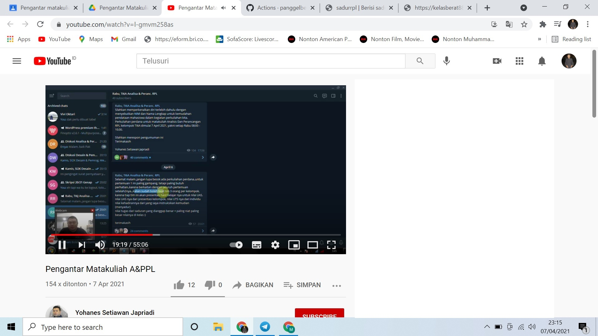
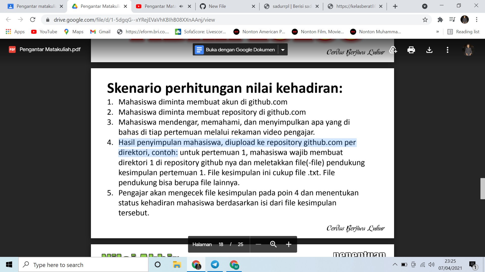
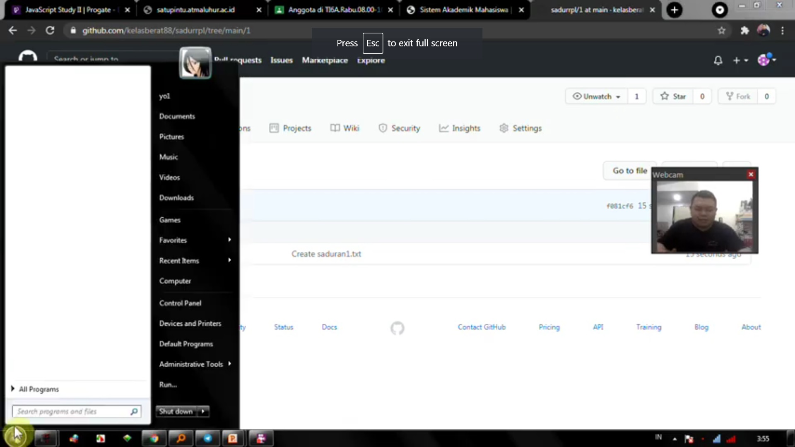

NIM : 1811500011
NAMA : Muhammad Ilham Febrian
Kelompok : TI6J
Hasil saya menyadur materi dan penjelasan video pada pertemuan ke 1:
1. Mahasiswa wajib cerdas dan berbudi luhur sesuai tagline dari ISB Atma Luhur yaitu "Cerdas Berjiwa Luhur".
2. Membuat kelompok yang beranggotakan 3 orang, untuk mempresentasikan hasil belajar.
3. Membuat hasil saduran di github.com untuk setiap pertemuan.
4. dst


